Task 0Get familiar with the hardware
Part A: what's in the kit
Each team gets five items:
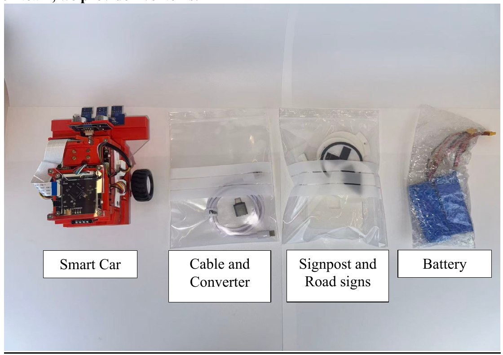
- Smart Car: the assembled car used for flashing and running programs, with two motors, two MCUs, three IR sensors, one RFID reader, and one OV5647 camera module.
- USB cable + USB-A→USB-C converter: the cable flashes code into the MCUs; the converter is for laptops without a USB-A port.
- Signpost with three road signs: a holder that secures the signs magnetically on an elevated base. Each sign has a magnet on one side, so one sign can display STOP, ARROW (left or right) or TRIANGLE by rotating it.
- 7.4 V battery: powers the motors. Keep it in a safe place; never stab or break it with sharp objects.
- Map: you will train the model and move the car on the map.
Battery: connect it in this order
- Make sure the power switch is off (pointing down) before connecting the battery.
- Plug the battery into the battery plugger and place it in the battery cabin; the 5 V power indicator lights up.
- Flip the switch up to turn the battery on; the battery power indicator lights up.
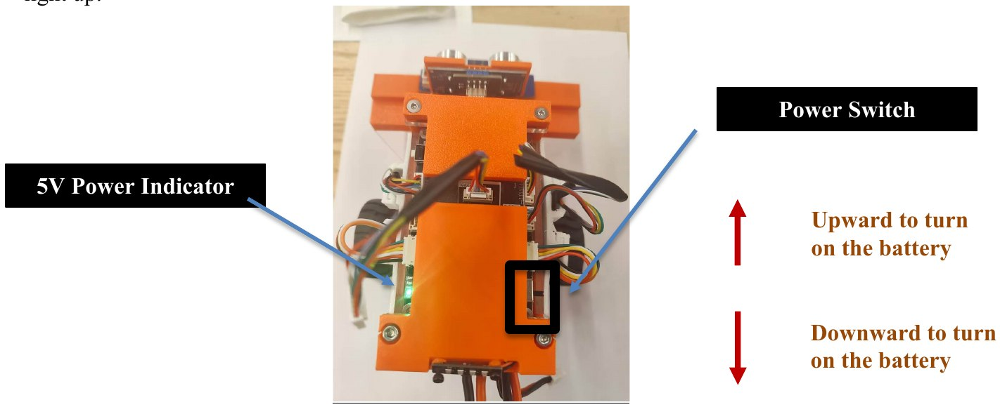
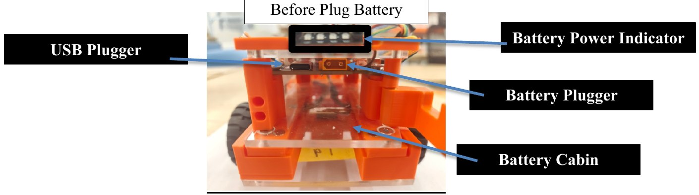
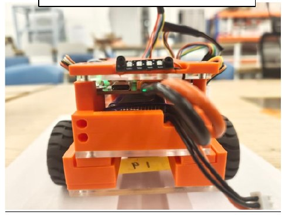
Map setup
- Align the signpost with the edge of the map so the car does not collide with it.
- Place the car on the RFID area when collecting data; the car's pre-set movement logic is designed around this starting point.
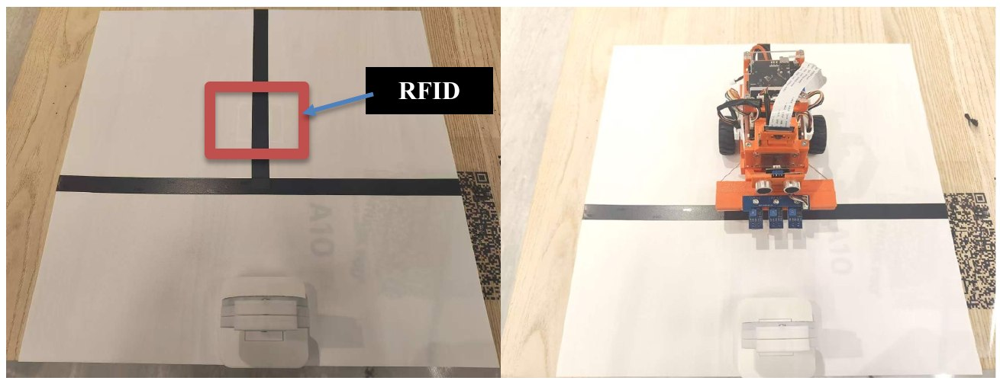
Part B: the two MCUs on the car
The car is controlled by two microcontroller units working together:
- ESP32-S3 (lower deck): drives the motors and reads the IR sensors, ultrasonic sensor and RFID reader. In Task 3 it receives the recognized label from the P4 and reacts.
- ESP32-P4 (upper deck): the vision board. It captures images with the OV5647 camera, runs the TensorFlow Lite model, and records images to the TF card while running
TFLite.ino(handy for debugging).
Each board has three interfaces worth remembering: the Enable button (reset the MCU and rerun the flashed program), the Boot button (opposite side; forces upload mode), and the USB port (5 V power + data).
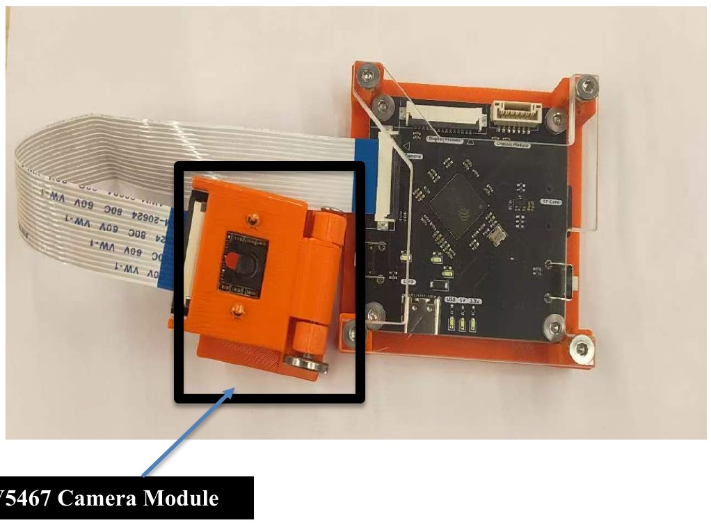
Detail: boot-button recovery when the port won't respond
If uploading fails with an error like "Arduino can't receive any message from the port", put the MCU into upload mode manually:
- Press and hold the Boot button.
- Quickly press and release the Enable button once; the MCU enters upload mode.
- Upload your code.
- After the upload completes, press the Enable button once to exit upload mode.
You normally don't need this: the Arduino app switches the MCU into upload mode automatically.
Camera module: three rules
- Never hot-plug the camera: connecting it while powered can damage it.
- If the camera LED is lit, the camera is connected properly; if not, it isn't.
- You can remove the protective cover from the camera lens.
The OV5647 module attaches with a 15-pin CSI cable. If previews stay black, power everything off and reseat that cable before anything else.
Install Arduino IDE and flash the camera uploader
In this task you learn the basic Arduino operations, downloading libraries and flashing code. Your goal: capture images from the car's camera and see them arrive in the Serial Monitor. The uploader sketch you flash here is reused in Task 2 (live capture) and Task 3 builds on this setup.
The board library download can take a while. The uploader code is pre-flashed, so you can jump ahead to Task 2 and come back; just make sure Task 1 is finished before Task 3.
Step by step
- Install Arduino IDE (2.3.10 or higher) from arduino.cc/en/software.
- Open the settings page (
cmd/ctrl + ,):- macOS: Arduino IDE → Settings → Additional Boards Manager URLs
- Windows: File → Preferences → Settings → Additional Boards Manager URLs
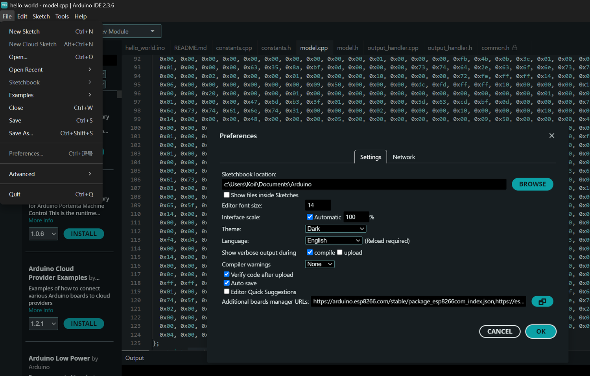
macOS settings. 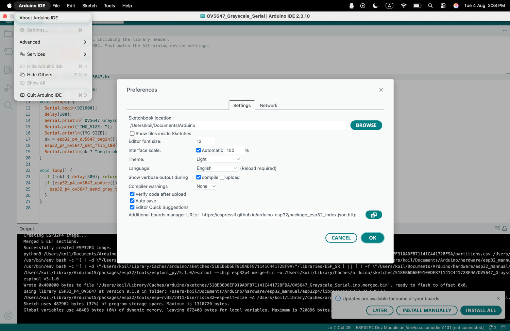
Windows preferences. - Add the Espressif board index URL and click OK:
https://dl.espressif.com/dl/package_esp32_index.json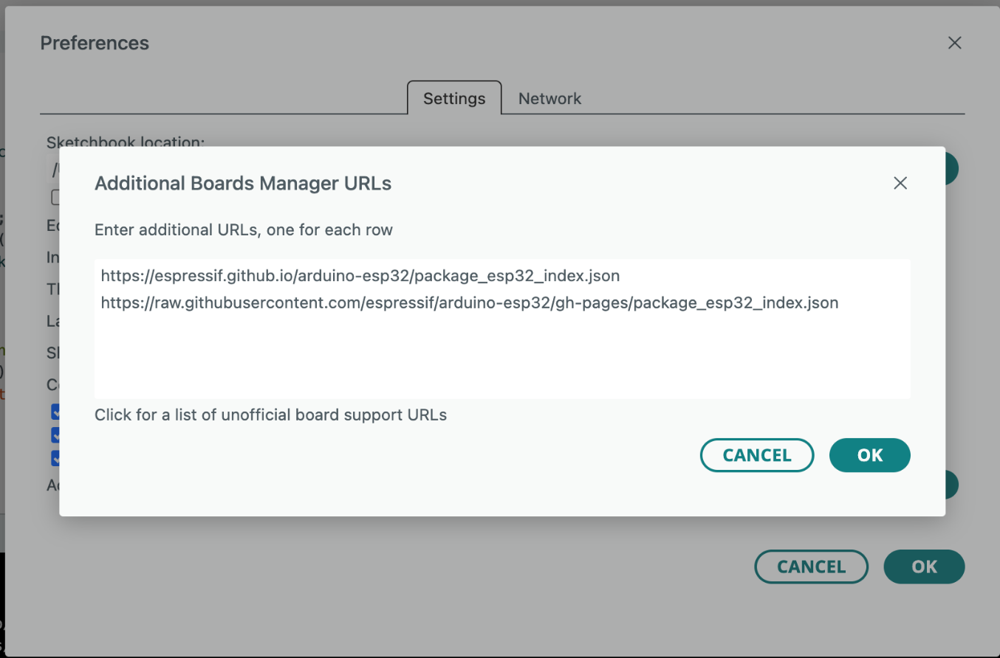
Paste the URL into this dialog. - Install the ESP32 board package: Tools → Board → Boards Manager, search
esp32, install esp32 by Espressif Systems, and pick version 3.3.1.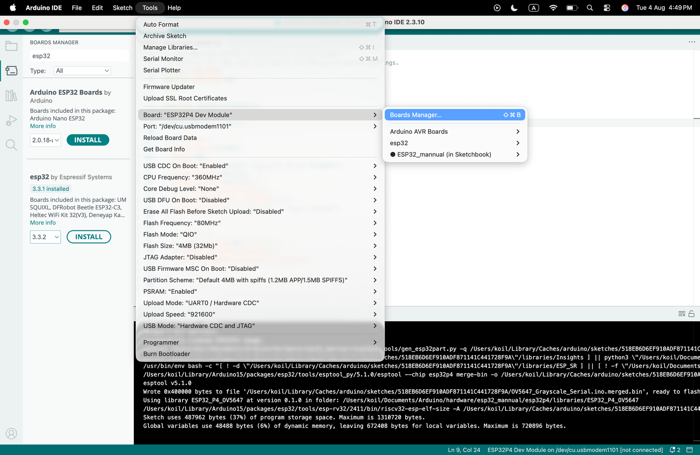
Install “esp32 by Espressif Systems”, version 3.3.1. - Add the customized core: unzip
esp32_mannual.zip(see downloads above) and drop the folder into your Arduino hardware path:- macOS:
/Users/{username}/Documents/Arduino/hardware/ - Windows:
C:\Users\{username}\Documents\Arduino\hardware\
The final path should look like
…/Documents/Arduino/hardware/esp32_mannual. - macOS:
- Select the board: Tools → Board → ESP32_mannual → ESP32P4 Dev Module. Leave the Port unselected for now.
Detail: full flash settings for the ESP32P4 Dev Module
Open Tools and match these one by one:
Setting Value USB CDC On Boot EnabledCPU Frequency 360MHzCore Debug Level NoneUSB DFU On Boot DisabledErase All Flash Before Sketch Upload DisabledFlash Frequency 80MHzFlash Mode QIOJTAG Adapter DisabledUSB Firmware MSC On Boot DisabledPartition Scheme 8M with spiffs (3MB APP/1.5MB SPIFFS)PSRAM EnabledUpload Mode UART0 / Hardware CDCUpload Speed 921600USB Mode Hardware CDC and JTAG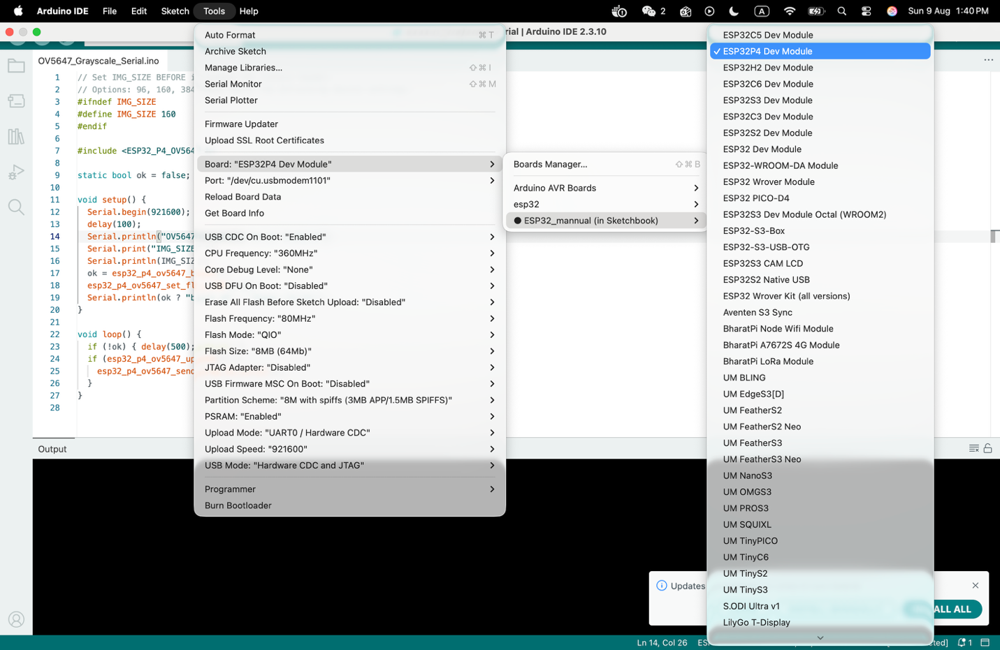
The Tools menu with every flash setting as configured. - Select the port: Tools → Port, choose the one the board is connected to.
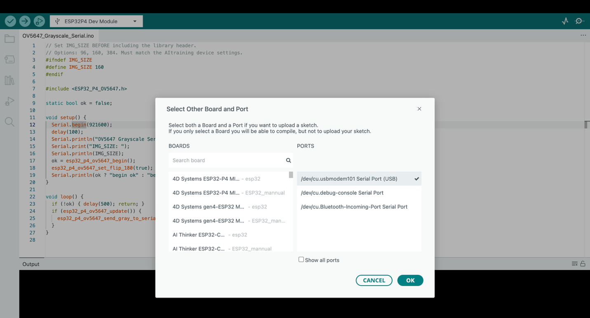
Pick your board's port (e.g. /dev/cu.usbmodem…on macOS). - Open the sample uploader sketch provided with the kit.
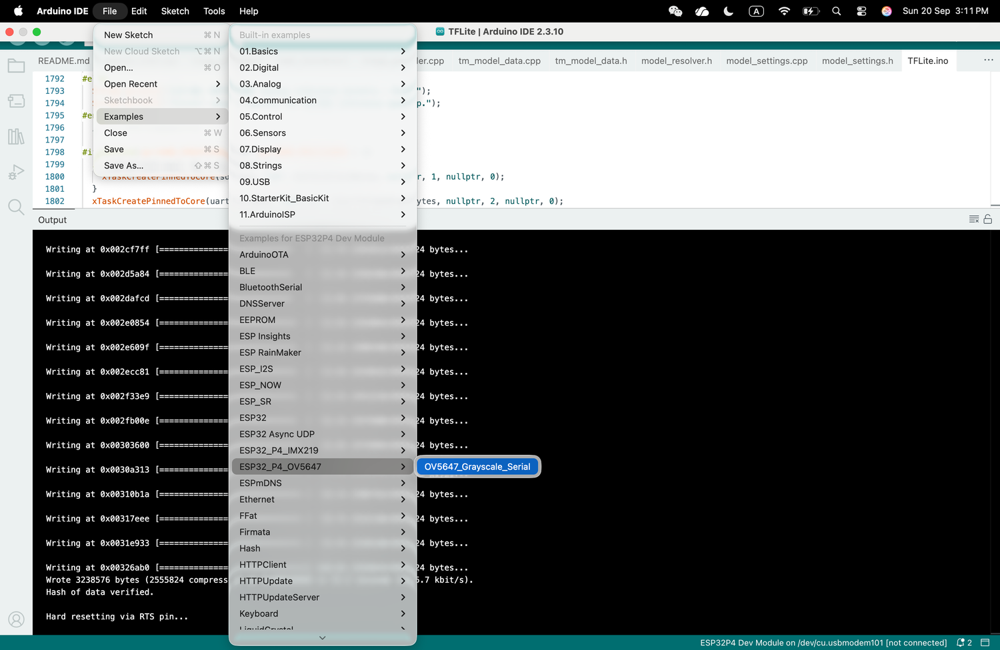
Open the image-upload sample code. - Flash it: click Upload and wait for the build and upload to finish.
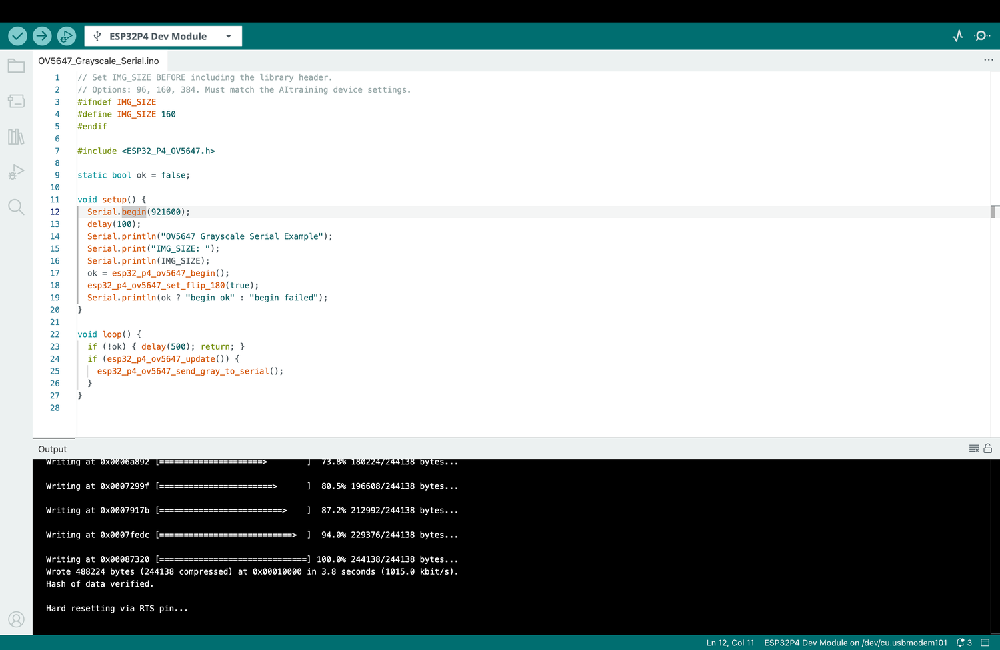
Click Upload; a successful flash reports done in the output panel. - Verify in the Serial Monitor: garbled characters mean the camera stream is arriving: success. Close the Serial Monitor afterwards so the port is free for the app.
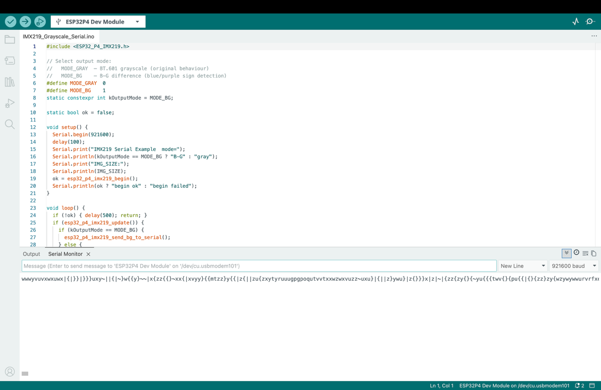
Garbled text = the image stream is live.
If the Serial Monitor shows nothing, first re-check every setting above, then press the Enable button once to rerun the flashed program.
Train a road-sign model in the TF Training app
Using the template project, walk the full pipeline (collect → preprocess → train → preview) and export a TensorFlow Lite model in .cpp/.hpp form. The model must recognize the three road signs in the order Left, Stop, Right.
Save the project regularly (crashes lose unsaved samples), and write down your OOD thresholds and Dark/Lum values: you'll type them into the MCU in Task 3.
2.1 · Open the app and the template project
- Install the TF Training app from the downloads banner (`.dmg` / `.exe`).
- Click Open Project and select the downloaded
template.tmproj, or click Open Image Project → Start from Empty for a blank project.
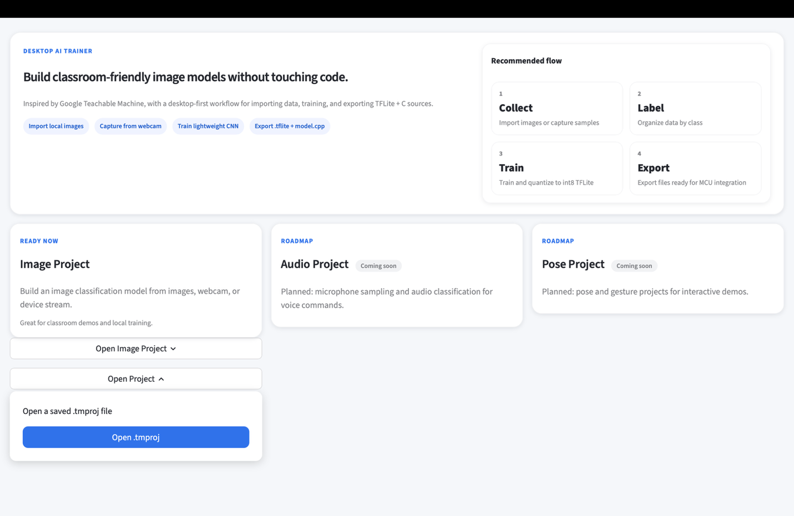
template.tmproj or start empty.2.2 · The three areas
- Sample area: collect and preprocess data.
- Train area: set hyperparameters and train.
- Preview area: preview the TensorFlow Lite Micro model live.
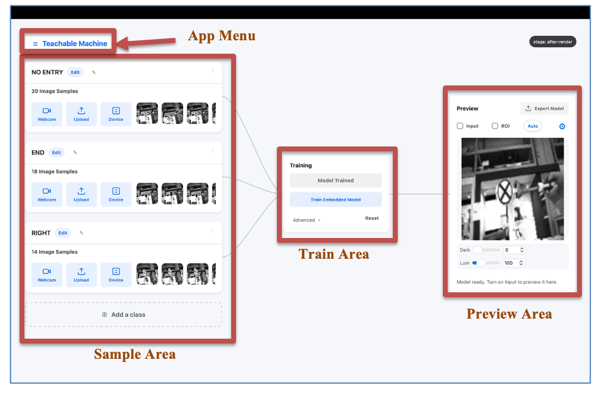
2.3 · Collect samples
Three ways to get images into a class:
- Webcam: uses your laptop's built-in or an external camera; pick a specific camera via the Gear icon. Capture takes single photos; hold Hold to Capture for a burst.
- Upload: choose one or more photos from the file browser.
- Device: the car's serial camera. Click Device, select the board's serial port (board plugged in), then capture.
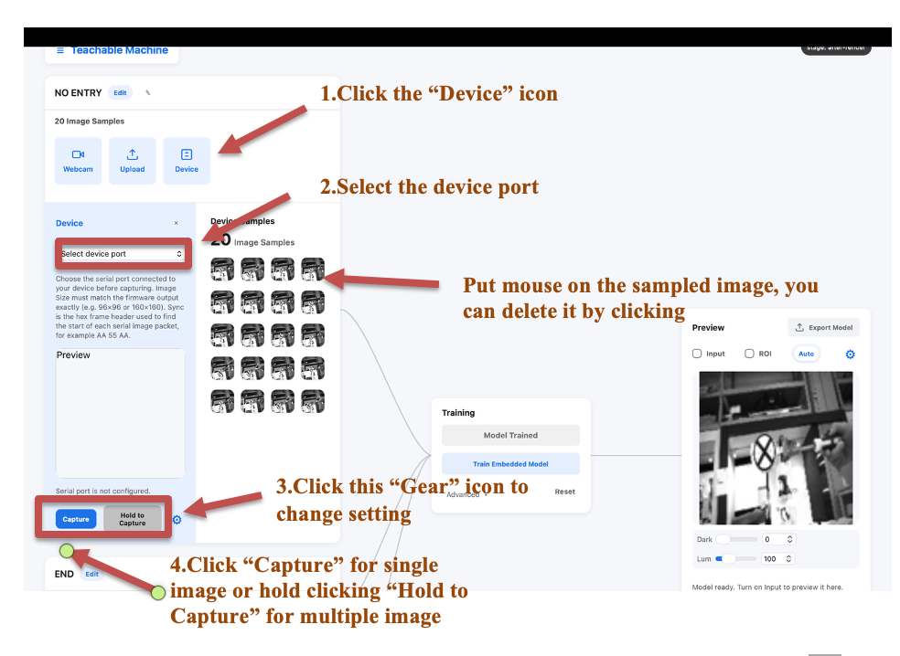
Device capture: pick the board's port. Detail: device capture settings (gear icon)
The gear next to the source controls the serial camera. The defaults are pre-matched to the uploader sketch from Task 1; leave them unless you re-flashed different settings:
- Input image size:
96 × 96 - Colour mode:
Grayscale - Baud rate:
115200 - Sync header:
AA 55 AA
- Input image size:
Arrange the three classes as Left → Stop → Right, top to bottom; this is the order the MCU expects. If you started from the template you can capture “Left” first and rename/reorder later on the edit page (next step).
2.4 · Preprocess the samples
Basic image processing removes environmental noise (extraneous variables) and boosts training quality, mainly by filtering pixels with Darkness/Luminance thresholds. Click the Edit icon to enter the image-processing page.
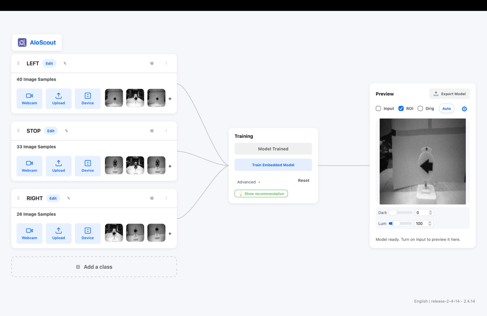
The page has two parts: the Image Viewer (left) and the Sample Worktable (right). The viewer shows the original image with a purple ROI box (the region that will be cropped and processed) beside the processed preview, where pixels below the Dark Thr or above the Lum Thr turn pure white.
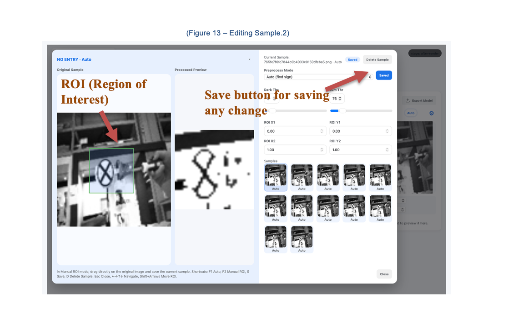
Detail: every preprocessing parameter
| Parameter | What it does |
|---|---|
| Preprocess mode | Auto: a search box in the middle of the image finds the darkest area and crops it as the ROI. Manual ROI: crop by dragging your mouse directly on the original image. |
| Dark Thr (darkness threshold) | Original-image pixels with luminosity below this value turn full white. A global setting for the whole class. |
| Lum Thr (luminosity threshold) | Original-image pixels with luminosity above this value turn full white. Also global for the class. |
| ROI x1, x2, y1, y2 (Manual ROI only) |
Relative positions of the top-left (x1, y1) and bottom-right (x2, y2) corners. E.g. x1=0.2, y1=0.1 on a 96×96 image → point (0.2·96, 0.1·96) = (19, 10), rounded to the nearest integer. |
Detail: keyboard shortcuts on the edit page
- ↑ ↓ ← →: select the sample to process or inspect.
- Shift + arrows: move the ROI (Manual ROI mode).
- F1 / F2: switch to Auto / Manual ROI preprocess mode.
- D: delete the selected sample.
- ESC: exit the Edit view.
- S: save changes. Save after every change!
All processed images are resized to image size × image size (set in the Train area) before training. Collect and process data for all three classes (Left, Stop, Right) to finish this part.
2.5 · Train
- Move to the Train area and click the Advanced icon to unfold the hyperparameters.
- Set hyperparameters (or click Use recommendation on the new app version), then click Train Embedded Model and wait.
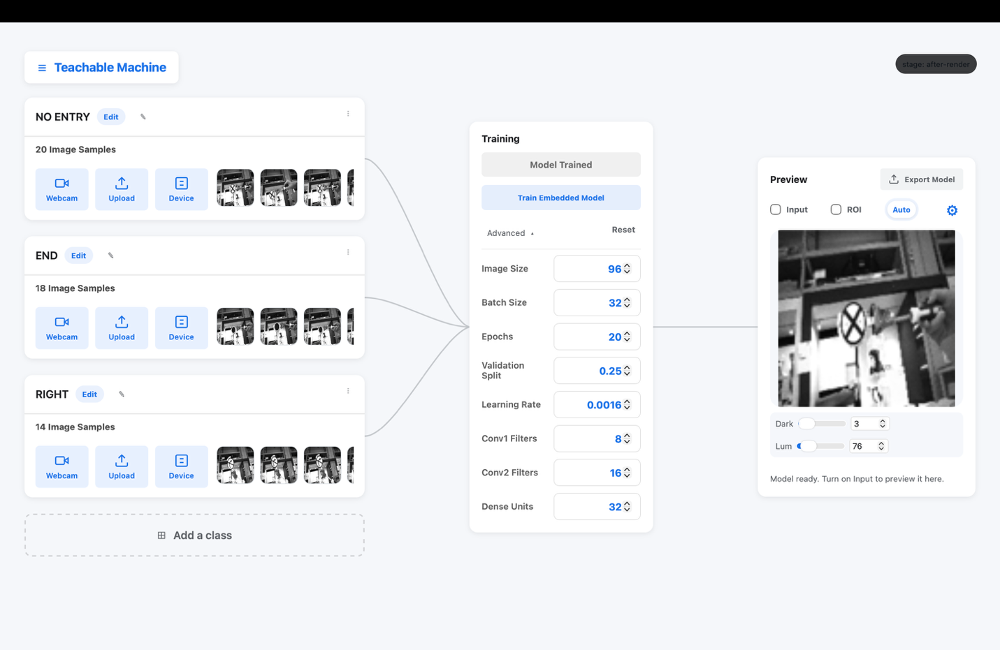
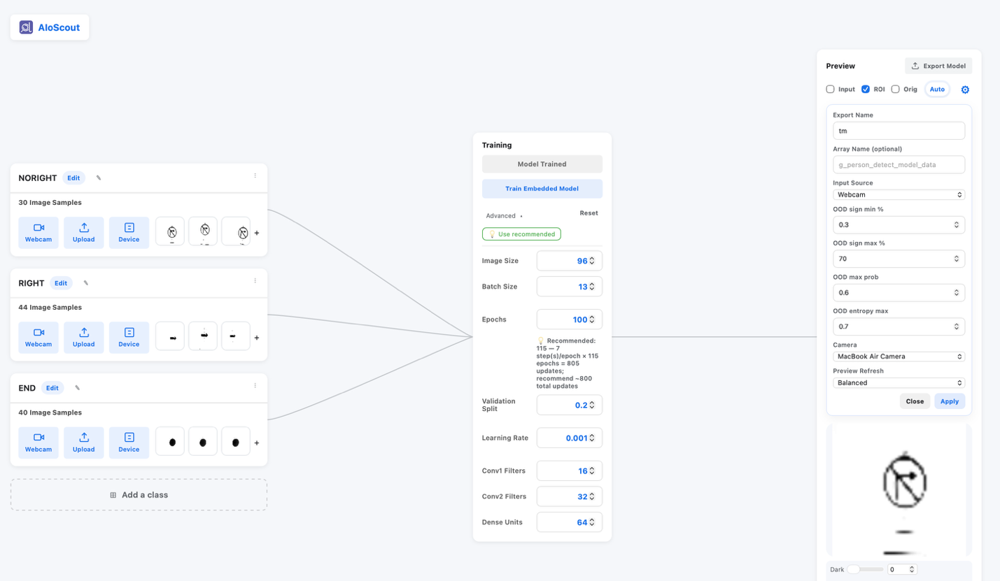
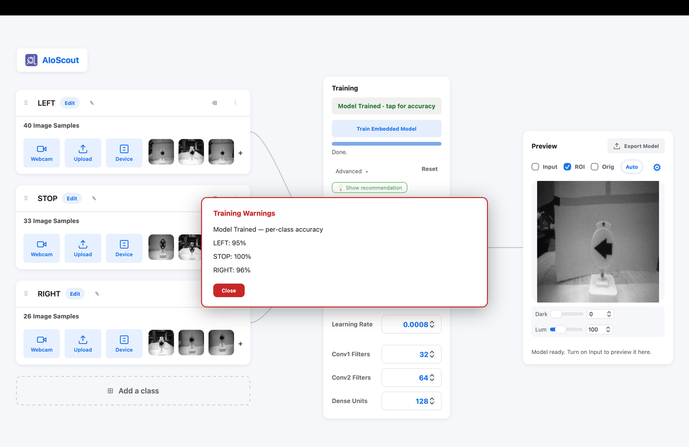
Detail: every hyperparameter, its range and its effect
| # | Hyperparameter | Default | Range | What it does |
|---|---|---|---|---|
| 1 | Image size | 96 | 96, 160, 384 | Input resolution; must match the input size used in the Preview area. Larger = more detail but slower training and inference. |
| 2 | Color mode | grayscale | rgb / grayscale | Input channels (1 or 3). Always use grayscale for the B-G/G-channel pipeline. |
| 3 | Batch size | 16 | 8 / 16 / 32 / 64 | Samples per training step. Larger = faster but more RAM; 16 works well at 96×96. |
| 4 | Epochs | 20 | 1–200 | Full passes through the dataset. More = better fit, but risk of overfitting. |
| 5 | Validation split | 0.25 | 0.05–0.50 | Fraction of data held out for validation, e.g. 0.20 = 80% train / 20% validate. |
| 6 | Learning rate | 0.001 | 0.00001–0.1 | Step size for weight updates. Higher learns faster but can be unstable; 0.001 is a safe default. |
| 7 | Conv1 filters | 8 | 4 / 8 / 16 / 32 | Feature detectors in the first convolution layer. More = better pattern recognition, larger model. |
| 8 | Conv2 filters | 16 | 8 / 16 / 32 / 64 | Feature detectors in the second convolution layer, typically 2× conv1. |
| 9 | Dense units | 32 | 16 / 32 / 64 / 128 | Neurons in the fully-connected layer. More = more complex decision boundaries. |
Balancing act: more conv1/conv2 filters, dense units, or a larger image size can raise accuracy (not guaranteed) but always slows inference, so balance accuracy against real-time performance on the car.
2.6 · Preview and tune the OOD gate
- Make sure the Task 1 uploader is still flashed. Click the Gear icon, set the input source to Device, and select the correct port. (Everything is resized and converted to image size × image size grayscale.)
- Toggle Input to view the captured image; the confidence bar at the bottom shows the result, and you can switch between show % and show score. ROI shows what the model actually sees, Orig the processed image. Dark/Lum thresholds can be adjusted live here too.
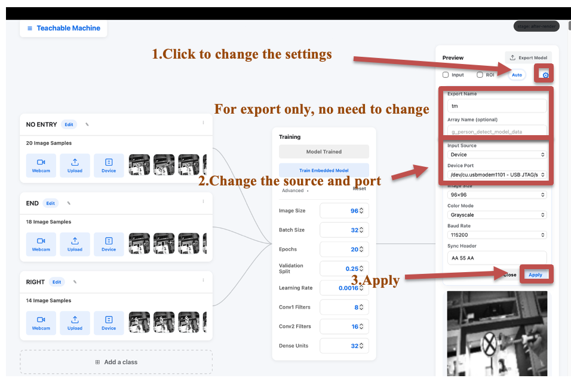
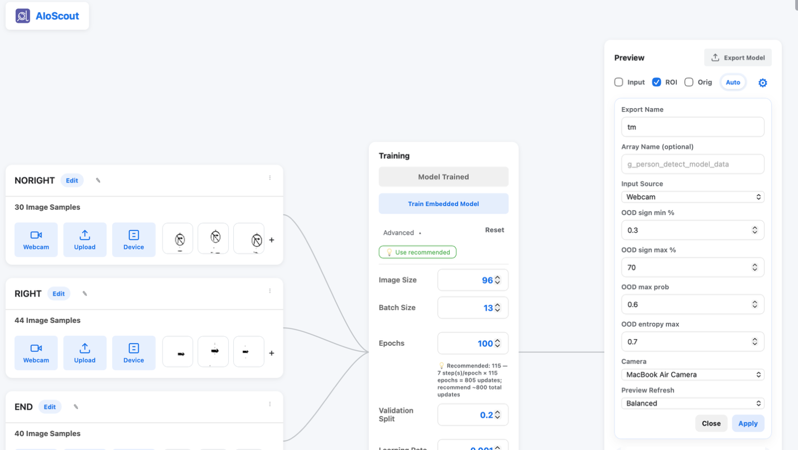
A SoftMax classifier produces a confident-looking output for any input, even an empty scene. To answer the real question, “is there actually a sign in this frame?”, the system runs three gating layers around the inference; if any single layer fires, the frame reports No Sign.
Detail: the three OOD gating layers
| Layer | Parameter | Default | Meaning | Fires “No Sign” when… |
|---|---|---|---|---|
| 1. Sign-pixel ratio (before inference; cheapest) |
sign_pct window |
0.3–70 % | Percentage of pixels whose brightness falls inside the Dark/Lum mask window (default 0–100). | The ratio is below spmin (scene has almost no dark target) or above spmax (lens covered / all-dark scene). |
| 2. SoftMax top probability (after inference) |
max_prob minimum |
≥ 0.60 | How confident the model is in the top class. | Top-class probability falls below 0.60: the model isn't confident in itself. |
| 3. Normalised entropy ratio (after inference) |
entropy_d maximum |
≤ 0.70 | How “spread out” the output distribution is (entropy ÷ max entropy, normalized to 0–1). | The ratio exceeds 0.70; probabilities are spread evenly and the model is guessing. |
The same four parameters are also available on the device, so the host preview and the car always use the same gate.
When checking performance, 0.1, 20, 0.1, 0.9 are convenient values to begin with. If the result is unsatisfactory, inspect the output messages beneath the preview area and adjust from there.
2.7 · Export and save
- Click Export model to export the model files.
- Open the top-left menu and choose Save Project.
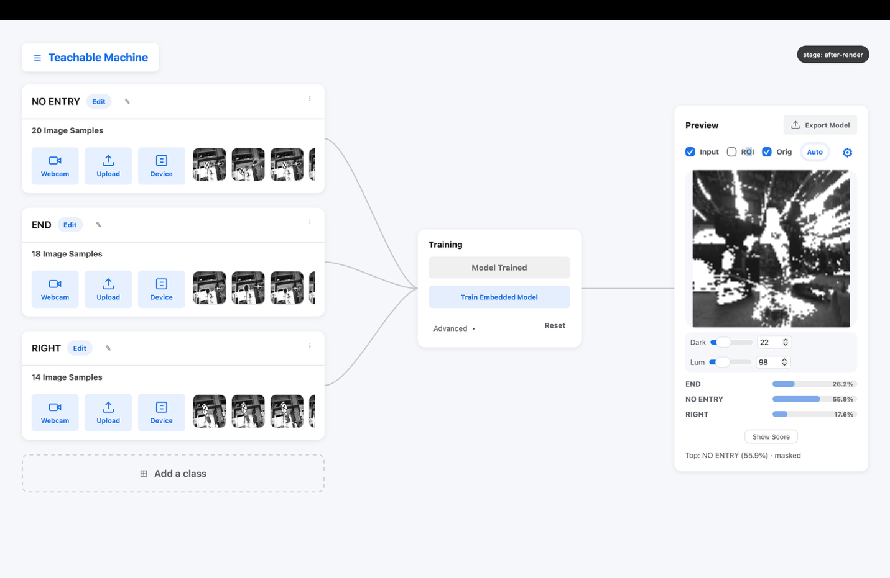
Deploy the model on the car
Import the exported model into the TFLite project, flash it, and confirm the car's movements match the signs it sees: Left turns left, Stop stops, Right turns right.
Step by step
- Open both folders: the folder with your exported model, and the deploy project containing
TFLite.ino(TFLite.zip in the downloads banner).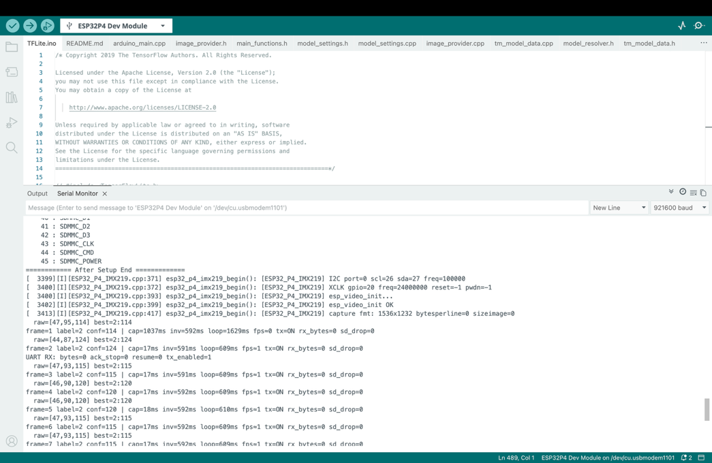
The deploy project in Arduino IDE. - Copy these five files from the export folder into the project folder, overwriting the existing ones:
tm_model_data.cpptm_model_data.hmodel_resolver.hmodel_settings.cppmodel_settings.h
- Upload
TFLite.ino: with the same flash settings from Task 1, then watch the model output.Detail: IMG_SIZE must match the app
Before uploading, make sure
IMG_SIZEequals the image size you trained with in the TF Training app:#ifndef IMG_SIZE #define IMG_SIZE 160 #endifA mismatch between this and the app's image size is the first thing to check if the results look wrong.
- Adjust over serial: in the Serial Monitor you can type commands to change parameters or the output mode without re-flashing.
Detail: the full serial command set
Command Example What it does help/?helpPrint the on-device command list. pingping→> PONGConnectivity check. get mask→ MASK: dark=0 lum=100Read the G-channel Dark/Lum sign-mask thresholds. set mask <D> <L>set mask 0 100Write Dark/Lum (auto-clamped so dark < lum); used by the next GetImage frame.get ood→ OOD: sp=0.30..70.00 mp=0.600 er=0.700Read the four OOD thresholds. set ood <spmin> <spmax> <mpmin> <ermax>set ood 0.3 70.0 0.60 0.70Write the four OOD thresholds (host-aligned defaults shown). get mode→ MODE: inferenceRead the current output mode. mode <keyword>mode infergraySwitch mode. Keywords: infer/inference/0,rgb/1,gray/grey,infergray/infer_gray/3,ext_rgb/11,ext_gray/12.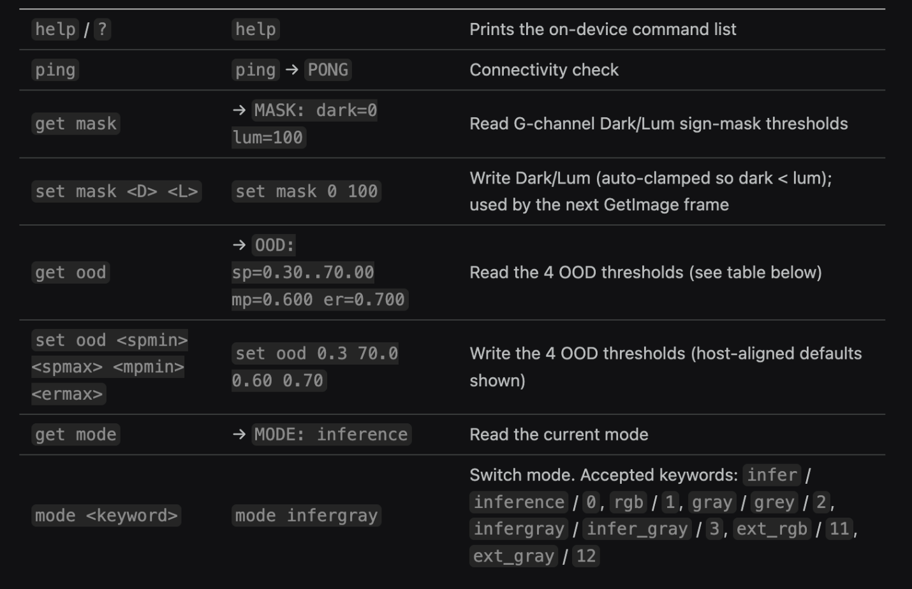
The on-device command reference. - Run the car: position it in front of the cross / RFID area. Plug in the battery, turn the power switch on, then press the Enable button: you'll hear a beep from the buzzer, the car starts moving, and the ESP32-S3 reads label messages from the ESP32-P4. Open the Serial Monitor (921600 baud) on the S3 port to verify accuracy; it prints a few waiting messages before the label data arrives.
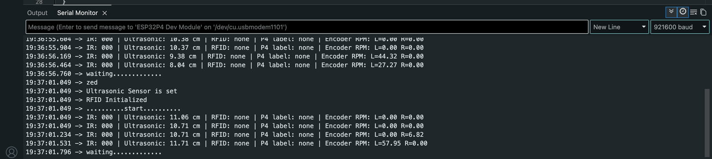
Finish with the final evaluation: 10 unseen sign presentations: record how many the car calls correctly, and share the result in the demo & sharing session.
Troubleshooting & fine-tuning
| Symptom | What to do |
|---|---|
| Serial Monitor shows nothing | Verify every Task 1 setting, then press the Enable button once. |
| “Can't receive any message from the port” while uploading | Use the boot-button recovery procedure (hold Boot, tap Enable, upload, tap Enable again). |
| Camera LED not lit | Camera not connected. Power off first, never hot-plug, reseat the 15-pin CSI cable. |
| Garbled text in the Serial Monitor after uploading | That's the binary image stream, so it worked. Close the monitor to free the port. |
| A real sign keeps reporting No Sign | Loosen the OOD gates; see the recipe below. |
| An empty scene reports a sign | Tighten the OOD gates; see the recipe below. |
Detail: how to fine-tune the OOD parameters
- Missing detections (a real sign reported as No Sign) → loosen the gates: lower
spmin, raisespmax, lowermpmin, raiseermax. - False detections (an empty scene reports a sign) → tighten the gates: raise
spmin, lowerspmax, raisempmin, lowerermax. - Find the firing layer first. Use the debug readout: a too-low or too-high
sign=value is layer 1, a lowmax=is layer 2, a highent=is layer 3. Adjust only that parameter; don't change them all at once. - The default
spminof 0.3 % is deliberately tiny so a distant or small sign (dark pixels covering only a small fraction of the frame) still passes layer 1. - Before a demo, run
get oodto note the current values; if you get lost, restore the defaults withset ood 0.3 70.0 0.60 0.70.
Detail: user config at the top of each source file
Edit the user configuration at the top of each source file (user_config.h) to change the output resolution and enable or disable the flip function:
// —— USER CONFIG —— output resolution / orientation, edit these two only ——
int g_frame_side = 160; // output resolution (8–512); capture + model input follow it
bool g_flip_180 = true; // camera is mounted upside down → rotate 180° to match capture/training orientation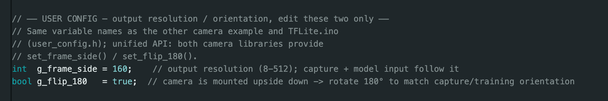
The project folders also ship with README.md files covering further development and more detailed examples, if you want to go beyond the workshop.